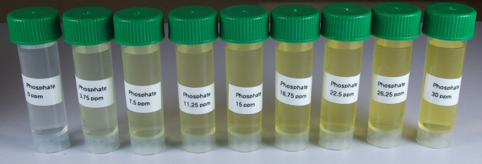

Vanadate-molybdate method¶

This method is based on APHA Standard Method 4500-P C. Description of the assay from the method: In a dilute orthophosphate solution, ammonium molybdate reacts under acid conditions to form a heteropoly acid, molybdophosphoric acid. In the presence of vanadium, yellow vanadomolybdophosphoric acid is formed. The intensity of the yellow color is proportional to phosphate concentration.
Reagents & Equipment¶
- Colorimeter
- Cuvettes
- Vanadate-molybdate reagent, Labchem Cat # LC266002
- 1 mL variable micropipette
Colorimeter set-up¶
- Wavelength: 470 nm. Use BLUE led (colorimeter RGB board).
- Phosphate standard data: download a data file or prepare your own phosphate standard data
- Before measuring samples, calibrate the colorimeter against water or a distilled water sample developed with vanadate-molybdate reagent as described below
Method¶
- Transfer 1 mL of sample water into a clean cuvette.
- Add 0.25 mL of vanadate-molybdate reagent and mix by pipetting up and down several times.
- Wait at least 10 minutes for color to develop.
- Place the cuvette with your sample into the colorimeter and click measure. The program will return the phosphate concentration in ppm.